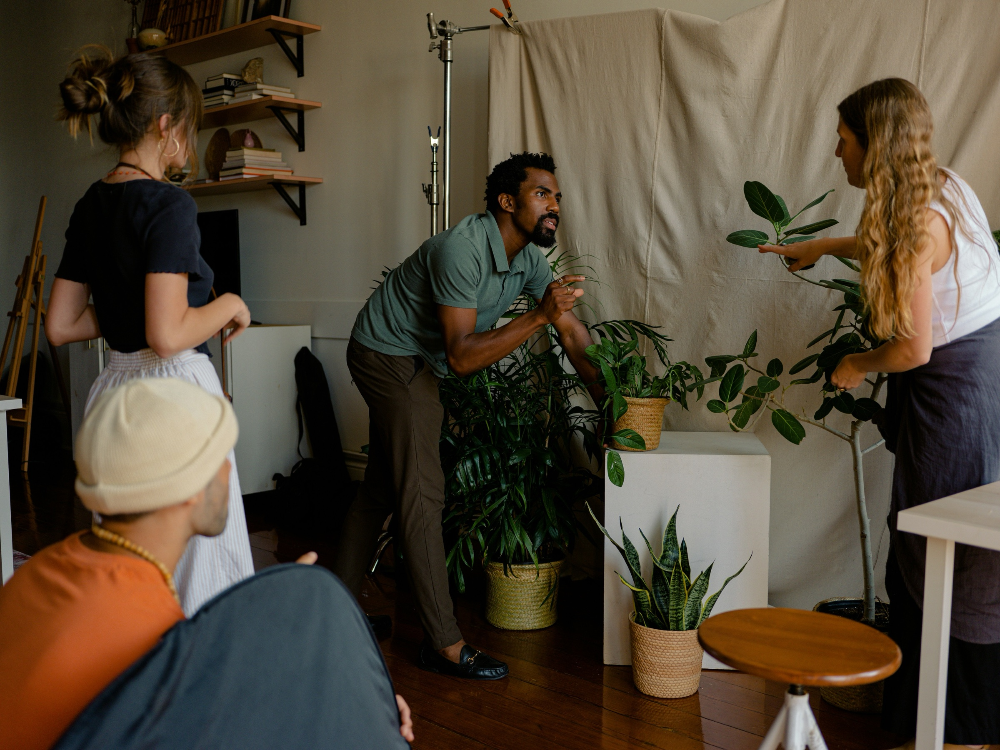

Headline
Body copy. Two or three sentences that explain the headline in plain words.
Headline
Headline
Body copy. Two or three sentences that explain the headline in plain words.
Headline
Headline
Body copy. Two or three sentences that explain the headline in plain words.
0 of 10
of the 10 casual gardeners we interviewed named a plant brand.
Source: casual gardener interviews
“No one’s trying to sell you.”
Will, gardener

Your turn.
Headline
A line of supporting copy.
Tile title
Tile title
Tile title
Tile title
Headline

Photo label

Photo label

Photo label

Photo label
Plantgem
Brand opportunity, framework and identity for a plant delivery company
Headline
03
This is a headline going on two lines
Cute headline in a box right here

A large
headline
goes here
01
A list with images
Placeholder copy

Placeholder copy

Placeholder copy

Placeholder copy

Placeholder copy
Placeholder copy
Your team at Parallel Path
Name
Role
Name
Role
Name
Role
Name
Role
Name
Role
Name
Role
Just covered: What was in this section

Up next:
Next section title
Headline
A line of supporting copy.


Headline
A line of supporting copy.
Clip title
What the person says in the clip goes here, a few sentences at a time.
Name, casual gardener
Headline
Row item
Row item
Row item
Row item
Headline
Row title
A line of supporting copy.
Row title
A line of supporting copy.
Row title
A line of supporting copy.
Meet Catherine, our first interview
“Hi, I’m Cat.”
“Would you call yourself a gardener?”
“Yes.”
“Why?”
“Because I have had a garden, and I try to have a garden. Um, as often as I can.”
“My mom’s side of the family are all gardeners, so every time I would visit my grandma, she would instantly take us from the car to her garden.”
“So I always wanted to do it. I was always around it.”
“I liked the idea of having everything from scratch, and from something that you grew outside.”
Catherine, casual gardener
3 Connectors

3 Connectors

Brand & customer findings
Interviews
Mystery shopping
Resonate audience insights
Body copy. Two or three sentences that explain the headline in plain words.
Chart: Resonate audience insights
MediaRadar competitive spend
Body copy. Two or three sentences that explain the headline in plain words.
Chart: MediaRadar competitive spend
Evaluation of your brand
Site audit, first impressions
SEO/GEO, LLMs
Consumer sentiment
Site audit, first impressions
Body copy. Two or three sentences that explain the headline in plain words.
Screenshot: site audit
SEO/GEO, LLMs
Body copy. Two or three sentences that explain the headline in plain words.
Screenshot: search and LLM answers
Consumer sentiment
Body copy. Two or three sentences that explain the headline in plain words.
Chart: consumer sentiment
Bonnie builds a connection with customers by giving first.
Infographic: Brand Reciprocity
Which channels help gardeners, and which only reach them?
In-store + signage
Retailer media
Website + search
Social
Partnerships
PR
Just covered: Ideas, findings, avenues
Up next:
Approach
GTM strategy overview
How the identity feeds into the rest of the model
BRF = how we evaluate, self reflect, double-check thinking
Diagram: GTM strategy
A website that keeps helping after you buy
Link into AI for answers
Image: website on a laptop
Give customers stories worth sharing.
437
posts tagged Bonnie in six months. 58% just a photo tag.
“Totally not sponsored (yet? lol)”
A first-time gardener, 1.7M views
Digital presence
Image: digital presence
Where we plant the brand.
Signage
Retail
Social
Paid
Brand assets
Guidelines
Templates
Asset library
Presentations
Be the answer when beginners ask.
What we heard
Named in 9 of 78 AI answers. 0 when they’re learning.
Ideas worth growing
Answers AI and search can use
A beginner prompt library
Beginner creators who rank in search
Grow where you live
Bonnie gives the answer. It earns the first plant.
Give people a reason to choose Bonnie.
What we heard
Grown under 100 miles away. Told at the shelf: 0 times.
Ideas worth growing
Signage with a reason
Scan the pot, learn the plant
Grown near you, on every listing
Truck day
Bonnie gives a reason and a next step. It earns the choice, and more space.
Help that keeps the plant growing.
What we heard
10 of 10 have lost a plant. 6 of 10 couldn’t say why.
Ideas worth growing
A “killed plants before” hub
A nudge to water
Replies that own the problem
More Bonnie voice in social
Bonnie gives help after the sale. It earns the second season.
Ideas worth growing.
Increasing brand relevance
Brand awareness, product campaigns, digital media
Inspiring casual gardeners
Experiences, in-store activations, OOH, merch, shelf
Expanding beyond food
Into more plants, gardening, lifestyle
Tin can hotline
Call or text Bonnie for planting advice, like the Butterball turkey hotline. Could also be a widget on the site, like Butterball’s.
Image: tin can hotline
Bonnie growers
Growers from the stations answer the hotline and show up on camera.
Image: bonnie growers
In-store help
In-store reps, field crews and street teams who help shoppers right at the rack.
Image: in-store help
Planting reminders
Frost dates and planting reminders by zip code. Texts that do the remembering for you.
Image: planting reminders
Bonnie text assistant
Text Bonnie for a shopping list based on your light, moisture and temperature, and get quick answers. Like the Instinct AI assistant.
Image: bonnie text assistant
Bonnie gardener
Bonnie hires one person who posts their own gardening journey and answers questions on Reddit and social.
Image: bonnie gardener
Kids and classrooms
Planting a seed at school, families growing together at home.
Image: kids and classrooms
Thrifted planters
Growing in thrifted and repurposed containers, a big thing with Gen Z.
Image: thrifted planters
Bonnie van
A van covered in live plants that parks where people hang out.
Image: bonnie van
Desk plant welcome kit
New employees get a gift package of plants for their desk, maybe picking a few out themselves. Bonnie could offer it to other companies and use it for its own new hires too. Riffs on the WSJ piece about desk plants as an office perk.
Image: desk plant welcome kit
Just covered: The branding process, mapped to your phases
Up next:
Brand Identity
The branding process, mapped to your phases
Define + Discover
Discovery, Opportunity
Develop the Brand
Foundation, Character, Identity
Enable + Activate
Identity rollout, guidelines, templates, website, GTM across the sub-brands
One process, start to finish.
Opportunity
Define the space. Identify where the brand can stand apart.
Foundation
Define the core. Clarify the ideas that guide every brand decision.
Character
Shape the voice. Set the tone, style, and personality.
Identity
Make it visible. Translate strategy into design and language.
Your phases. Our process.
Define + Discover
Discovery
Opportunity
Build on what we’ve both learned
Develop the Brand
→
Foundation
Character
Identity
Enable + Activate
→
Identity rollout
Guidelines
Templates
Website
Go-to-market across the sub-brands
Opportunity
Foundation
Character
Identity
Opportunity
Find where Bonnie can stand apart in its category.
Brand architecture
How each sub-brand drives growth
How Bonnie shows up across them
Brand architecture
Diagram: brand architecture
Opportunity
Foundation
Character
Identity
Landscape
The brands around Bonnie.
Rivals
Substitutes
Benchmarks
Landscape
Rivals
Logos
Substitutes
Logos
Benchmarks
Logos
Area of opportunity
The open space for the brand in today’s marketplace.
Open space
Axis
Axis
Axis
Axis
Brand opportunity
Opportunity
Foundation
Character
Identity
Foundation
Set the ideas behind every design decision.
Position: Idea, Audience, Archetype
Story: Vision, Promise, Belief
Platform: Values, Actions, Personality
Messaging
Position, Story, Platform
Position
Where the brand sits in the world.
Idea
The intention that drives your business.
Audience
People and attitudes you connect with.
Archetype
Your universal cultural symbols.
Story
Why the brand matters.
Vision
The results of your successful efforts.
Promise
Your commitment to your audience.
Belief
The truth behind your brand.
Platform
How the brand shows up.
Values
Core principles that guide you.
Actions
How your brand benefits your audience.
Personality
Your voice and communication style.
Messaging
Body copy. Two or three sentences that explain the headline in plain words.
Messaging example
Opportunity
Foundation
Character
Identity
Character
Explore directions across visual and verbal cues.
Two exploratory mood boards
Nothing gets designed until we land on the right direction.
Direction one
Direction two
What stays and what changes
Protect
Identity elements, hat icon, color, heritage
Evolve in steps
Dropping “Plants” first
Logo today
Logo, step 1
Opportunity
Foundation
Character
Identity
Identity
Expand the direction into a full identity system.
Logo iterations
Color, type, icons, photo, illustration, voice
Identity system
Color
Type
Icons
Photo
Illustration
Voice
Imagery
Plants as they grow and the people who grow them. AI stays behind the scenes.
Image: imagery
Image: Boxbox work
Boxbox
Brand framework and identity
Image: Campminder work
Campminder
Brand architecture
Just covered: What we’d protect and how the identity evolves
Up next:
Consumer Connection & Experience
Ideas worth growing.
Before the shelf
The inspo and the answer, wherever beginners ask.
Website beginner prompt library
Creators who rank in search
Bonnie’s resident gardener
Thrifted planters
At the shelf
Give people a reason to choose Bonnie.
Signage with a reason
Bonnie van
Bonnie growers shop the stores on camera
Perks you can plant
After the shelf
Help that keeps plants growing & the gardeners going.
Text assistant, plus zip and zone reminders
The “is it dead” plant hotline
Little hands, big harvest
Customer care on social
After the shelf: the QR on the pot
Today
Plant specs and a buy link.

After the shelf: the QR on the pot
Our idea
Care help, right from the pot.